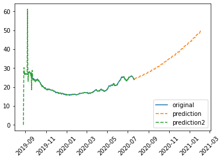
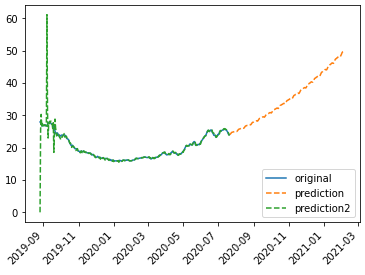
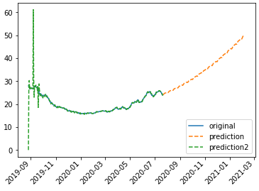

頑張らないために頑張る
ゆるく頑張ります
matplotlibで作成したグラフのラベル重複を解消する方法
概要
matplotlibでグラフを作成する際、ラベルが長すぎるなどの理由で他のラベルと重複して表示されてしまい見にくい場合があります。こういうときは、rotationで角度をつけると見やすくなるのでメモ。
サンプル
fig = plt.figure()
ax = fig.add_subplot(1, 1, 1)
ax.plot(df, label='original')
ax.plot(pred, label='prediction', linestyle='--')
ax.plot(pred2, label='prediction2', linestyle='--')
ax.legend()
plt.show()任意のデータが含まれたdfについてプロットします。

この結果は上記のようになります。X軸のラベルがそれぞれに被ってしまい非常に見にくいですね。
fig = plt.figure()
ax = fig.add_subplot(1, 1, 1)
ax.plot(df, label='original')
ax.plot(pred, label='prediction', linestyle='--')
ax.plot(pred2, label='prediction2', linestyle='--')
labels = ax.get_xticklabels()
plt.setp(labels, rotation=45)
ax.legend()
plt.show()そこで、上記のようにラベル表示に角度をつけます。上の例だと、45度の角度を設定しているわけです。

もともとの表示位置から45度反時計回りに回転した状態で、X軸のラベルが表示されました。どうも、ラベルの文字列の中心が、回転の中心になっているようです。また、そのまま回転するとグラフ本体に被ってしまいそうな場合、上下方向に調節してくれるようです。
fig = plt.figure()
ax = fig.add_subplot(1, 1, 1)
ax.plot(df, label='original')
ax.plot(pred, label='prediction', linestyle='--')
ax.plot(pred2, label='prediction2', linestyle='--')
labels = ax.get_xticklabels()
plt.setp(labels, rotation=45, ha='right')
ax.legend()
plt.show()haはたぶんhorizontalalignmentの略で、left・center・rightの値を取ります。水平方向の表示位置を調整するのに利用します。

haにrightを設定したところ、ラベルの右側が目盛り線の位置と合うようになりました。この設定をleftにすれば、ラベルの左側が目盛り線と合うようになります。
fig = plt.figure()
ax = fig.add_subplot(1, 1, 1)
ax.plot(df, label='original')
ax.plot(pred, label='prediction', linestyle='--')
ax.plot(pred2, label='prediction2', linestyle='--')
labels = ax.get_xticklabels()
plt.setp(labels, rotation=45, ha='right', va='center_baseline')
ax.legend()
plt.show()水平方向があるってことは垂直方向があるってことで、verticalalignmentを意味するvaもあります。top・bottom・center・baseline・center_baselineが設定可能なパラメータ。デフォルトは多分だけどtopでしょうか。

実行結果は上記の画像のようになります。
ちなみに、topとcenter_baseline以外の設定値は、ラベルがグラフ本体に被るので正直使いどころが難しいです。文字列が短いならアリなんだろうかなぁ。